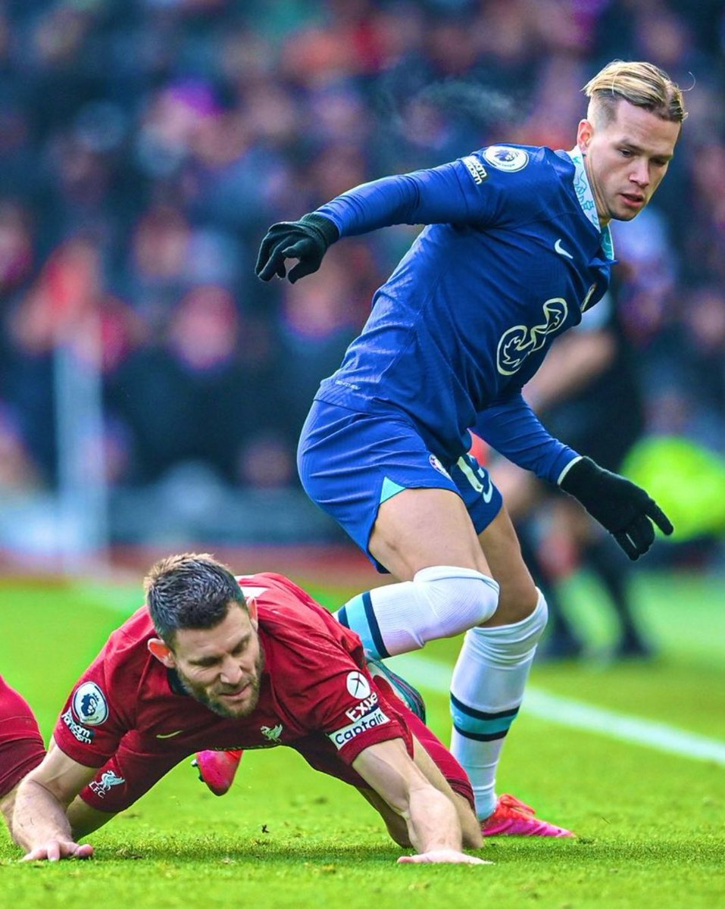

Зібрали для вас головне про дебют Михайла Мудрика в “Челсі”.
Сьогодні відбувся такий очікуваний дебют Михайла Мудрика в АПЛ. Українець всього кілька днів тому перейшов у “Челсі”, але не було жодних сумнівів, що він вийде на поле у найближчій грі. Так і сталося. Мудрик вийшов на заміну у другому таймі матчу з “Ліверпулем” і одразу показав, що готовий до футболу світового рівня.
Що говорять числа?
Перш за все, Мудрик одразу використав свою головну зброю – дриблінг. Хоч він і провів на поле лише 35 хвилин, жоден гравець не здійснив більше за нього вдалих спроб дриблінгу. Маєте питання щодо захисних навичок вінгера? 100% вдалих відборів, 7 виграних єдиноборств і 4 повернення володіння м’ячем – чудова відповідь на будь-які питання. 13 точних передач із 14, 4 дотики у штрафній суперника і удар, який міг принести перемогу, прекрасно доповнюють картину його першого матчу в АПЛ.
Реакція експертів на дебют Мудрика
“Мудрик деякий час не грав у футбол. У нього була перерва посеред сезону, тому нам доводиться контролювати кількість ігрового часу. І він досі у цій фазі. Але я думаю, ви вже побачили його якість. Мені здалося, що він добре вплинув на гру”
– сказав головний тренер “Челсі” Грем Поттер в післяматчевому інтерв’ю для BT Sport.
Стівен Джеррард вже порівнює Михайла з зіркою світового рівня: “Мудрик виглядає дійсно вдалим підписанням. Деякі з його дій сьогодні були просто неймовірні.
Він мені трохи нагадує Ар’єна Роббена":
- його робота ногами
- наскільки він швидкий
- як він поводиться з м’ячем
Я був би дуже схвильований, якби вболівав за “Челсі”.
Вболівальники в захваті від Мудрика
Прихильники “Челсі” також вже придумали з ким можна порівняти свого новачка. На їхню думку Мудрик має той самий вайб, що і піковий Еден Азар.
Тим часом Джеймса Мілнера вже визнали першою жертвою українця в Англії.

- Що відомо:
-
Мудрик став одним з шести новачків "Челсі" цього трансферного вікна.
- Вже після підписання українця лондонці посилилися іншим гравцем атакуальної ланки - правим вінгером Ноні Мадуеке з нідерландського ПСВ.
-
Після нічиєї з "Ліверпулем" команда Ґрема Поттера залишилася на десятому місці в турнірній таблиці АПЛ.
- У п'яти останніх зустрічах чемпіонату лондонці здобули тільки одну перемогу.
-
Наступний матч "Челсі" проведе 3 лютог.
- Коли зіграє з "Фулгемом" у 22-му турі чемпіонату Англії.
-
Мудрик став одним з шести новачків "Челсі" цього трансферного вікна.
Читайте також: